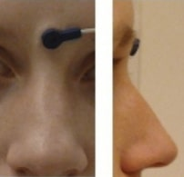

Electroencephalography
Support for Electroencephalography (EEG) was developed as a BIDS Extension Proposal. Please see Citing BIDS on how to appropriately credit this extension when referring to it in the context of the academic literature.
Example datasets
Several example EEG datasets have been formatted using this specification and can be used for practical guidance when curating a new dataset.
EEG recording data
Template:
sub-<label>/
[ses-<label>/]
eeg/
sub-<label>[_ses-<label>]_task-<label>[_acq-<label>][_run-<index>]_eeg.<extension>
sub-<label>[_ses-<label>]_task-<label>[_acq-<label>][_run-<index>]_eeg.json
sub-<label>[_ses-<label>]_task-<label>[_acq-<label>][_run-<index>]_events.json
sub-<label>[_ses-<label>]_task-<label>[_acq-<label>][_run-<index>]_events.tsv
sub-<label>[_ses-<label>]_task-<label>[_acq-<label>][_run-<index>][_recording-<label>]_physio.json
sub-<label>[_ses-<label>]_task-<label>[_acq-<label>][_run-<index>][_recording-<label>]_physio.tsv.gz
sub-<label>[_ses-<label>]_task-<label>[_acq-<label>][_run-<index>][_recording-<label>]_stim.json
sub-<label>[_ses-<label>]_task-<label>[_acq-<label>][_run-<index>][_recording-<label>]_stim.tsv.gz
Legend:
-
For more information about filename elements (for example, entities, suffixes, extensions), follow the links embedded in the filename template.
-
<matches>is a placeholder to denote an arbitrary (and valid) sequence of entities and labels at the beginning of the filename (only BIDS "raw"). -
<source_entities>is a placeholder to denote an arbitrary sequence of entities and labels at the beginning of the filename matching a source file from which the file derives (only BIDS-Derivatives). -
Filename entities or directories between square brackets (for example,
[_ses-<label>]) are OPTIONAL. -
Some entities may only allow specific values, in which case those values are listed in
<>, separated by|. -
_<suffix>means that there are several (>6) valid suffixes for this filename pattern. -
.<extension>means that there are several (>6) valid extensions for this file type. -
[.gz]means that both the unzipped and gzipped versions of the extension are valid.
The EEG community uses a variety of formats for storing raw data, and there is no single standard that all researchers agree on. For BIDS, EEG data MUST be stored in one of the following formats:
| Format | Extension(s) | Description |
|---|---|---|
| European data format | .edf |
Each recording consists of a single .edf file. edf+ files are permitted. The capital .EDF extension MUST NOT be used. |
| BrainVision Core Data Format | .vhdr, .vmrk, .eeg |
Each recording consists of a .vhdr, .vmrk, .eeg file triplet. |
| EEGLAB | .set, .fdt |
The format used by the MATLAB toolbox EEGLAB. Each recording consists of a .set file with an OPTIONAL .fdt file. |
| Biosemi | .bdf |
Each recording consists of a single .bdf file. bdf+ files are permitted. The capital .BDF extension MUST NOT be used. |
It is RECOMMENDED to use the European data format, or the BrainVision data format. It is furthermore discouraged to use the other accepted formats over these RECOMMENDED formats, particularly because there are conversion scripts available in most commonly used programming languages to convert data into the RECOMMENDED formats.
We encourage users to provide additional metadata extracted from the manufacturer-specific data files in the sidecar JSON file.
Note the RecordingType, which depends on whether the data stream on disk
is interrupted or not.
Continuous data is by definition 1 segment without interruption.
Epoched data consists of multiple segments that all have the same length
(for example, corresponding to trials) and that have gaps in between.
Discontinuous data consists of multiple segments of different length,
for example due to a pause in the acquisition.
Note that for proper documentation of EEG recording metadata it is important to understand the difference between electrode and channel: An EEG electrode is attached to the skin, whereas a channel is the combination of the analog differential amplifier and analog-to-digital converter that result in a potential (voltage) difference that is stored in the EEG dataset. We employ the following short definitions:
-
Electrode = A single point of contact between the acquisition system and the recording site (for example, scalp, neural tissue, ...). Multiple electrodes can be organized as caps (for EEG), arrays, grids, leads, strips, probes, shafts, and so on.
-
Channel = A single analog-to-digital converter in the recording system that regularly samples the value of a transducer, which results in the signal being represented as a time series in the digitized data. This can be connected to two electrodes (to measure the potential difference between them), a magnetic field or magnetic gradient sensor, temperature sensor, accelerometer, and so on.
Although the reference and ground electrodes are often referred to as channels, they are in most common EEG systems not recorded by themselves. Therefore they are not represented as channels in the data. The type of referencing for all channels and optionally the location of the reference electrode and the location of the ground electrode MAY be specified.
Sidecar JSON (*_eeg.json)
For consistency between studies and institutions, we encourage users to extract the values of these fields from the actual raw data. Whenever possible, please avoid using ad hoc wording.
Those fields MUST be present:
| Key name | Requirement Level | Data type | Description |
|---|---|---|---|
| EEGReference | REQUIRED | string | General description of the reference scheme used and (when applicable) of location of the reference electrode in the raw recordings (for example, "left mastoid", "Cz", "CMS"). If different channels have a different reference, this field should have a general description and the channel specific reference should be defined in the channels.tsv file. |
| SamplingFrequency | REQUIRED | number | Sampling frequency (in Hz) of all the data in the recording, regardless of their type (for example, 2400). The sampling frequency of data channels that deviate from the main sampling frequency SHOULD be specified in the channels.tsv file. |
| PowerLineFrequency | REQUIRED | number or "n/a" |
Frequency (in Hz) of the power grid at the geographical location of the instrument (for example, 50 or 60). |
| SoftwareFilters | REQUIRED | object of objects or "n/a" |
Object of temporal software filters applied, or "n/a" if the data is not available. Each key-value pair in the JSON object is a name of the filter and an object in which its parameters are defined as key-value pairs (for example, {"Anti-aliasing filter": {"half-amplitude cutoff (Hz)": 500, "Roll-off": "6dB/Octave"}}). |
Those fields SHOULD be present:
| Key name | Requirement Level | Data type | Description |
|---|---|---|---|
| CapManufacturer | RECOMMENDED | string | Name of the cap manufacturer (for example, "EasyCap"). |
| CapManufacturersModelName | RECOMMENDED | string | Manufacturer's designation of the cap model (for example, "actiCAP 64 Ch Standard-2"). |
| EEGChannelCount | RECOMMENDED | integer | Number of EEG channels recorded simultaneously (for example, 21).Must be a number greater than or equal to 0. |
| ECGChannelCount | RECOMMENDED | integer | Number of ECG channels. Must be a number greater than or equal to 0. |
| EMGChannelCount | RECOMMENDED | integer | Number of EMG channels. Must be a number greater than or equal to 0. |
| EOGChannelCount | RECOMMENDED | integer | Number of EOG channels. Must be a number greater than or equal to 0. |
| MISCChannelCount | RECOMMENDED | integer | Number of miscellaneous channels not covered otherwise. Must be a number greater than or equal to 0. |
| TriggerChannelCount | RECOMMENDED | integer | Number of channels for digital (binary TTL) triggers or analog equivalents (TTL in volt). Corresponds to the TRIG channel type.Must be a number greater than or equal to 0. |
| RecordingDuration | RECOMMENDED | number | Length of the recording in seconds (for example, 3600). |
| RecordingType | RECOMMENDED | string | Defines whether the recording is "continuous", "discontinuous", or "epoched", where "epoched" is limited to time windows about events of interest (for example, stimulus presentations or subject responses).Must be one of: "continuous", "epoched", "discontinuous". |
| EpochLength | OPTIONAL, but RECOMMENDED if RecordingType is "epoched" | number | Duration of individual epochs in seconds (for example, 1) in case of epoched data. If recording was continuous or discontinuous, leave out the field.Must be a number greater than or equal to 0. |
| EEGGround | RECOMMENDED | string | Description of the location of the ground electrode (for example, "placed on right mastoid (M2)"). |
| HeadCircumference | RECOMMENDED | number | Circumference of the participant's head, expressed in cm (for example, 58).Must be a number greater than 0. |
| EEGPlacementScheme | RECOMMENDED | string | Placement scheme of EEG electrodes. Either the name of a standardized placement system (for example, "10-20") or a list of standardized electrode names (for example, ["Cz", "Pz"]). |
| HardwareFilters | RECOMMENDED | object of objects or "n/a" |
Object of temporal hardware filters applied, or "n/a" if the data is not available. Each key-value pair in the JSON object is a name of the filter and an object in which its parameters are defined as key-value pairs. For example, {"Highpass RC filter": {"Half amplitude cutoff (Hz)": 0.0159, "Roll-off": "6dB/Octave"}}. |
| SubjectArtefactDescription | RECOMMENDED | string | Freeform description of the observed subject artifact and its possible cause (for example, "Vagus Nerve Stimulator", "non-removable implant"). If this field is set to "n/a", it will be interpreted as absence of major source of artifacts except cardiac and blinks. |
These fields MAY be present:
| Key name | Requirement Level | Data type | Description |
|---|---|---|---|
| ElectricalStimulation | OPTIONAL | boolean | Boolean field to specify if electrical stimulation was done during the recording (options are true or false). Parameters for event-like stimulation should be specified in the events.tsv file.Must be one of: "true", "false". |
| ElectricalStimulationParameters | OPTIONAL | string | Free form description of stimulation parameters, such as frequency or shape. Specific onsets can be specified in the events.tsv file. Specific shapes can be described here in freeform text. |
Hardware information
| Key name | Requirement Level | Data type | Description |
|---|---|---|---|
| Manufacturer | RECOMMENDED | string | Manufacturer of the equipment that produced the measurements. |
| ManufacturersModelName | RECOMMENDED | string | Manufacturer's model name of the equipment that produced the measurements. |
| SoftwareVersions | RECOMMENDED | string | Manufacturer's designation of software version of the equipment that produced the measurements. |
| DeviceSerialNumber | RECOMMENDED | string | The serial number of the equipment that produced the measurements. A pseudonym can also be used to prevent the equipment from being identifiable, so long as each pseudonym is unique within the dataset. |
Task information
| Key name | Requirement Level | Data type | Description |
|---|---|---|---|
| TaskName | REQUIRED | string | Name of the task. No two tasks should have the same name. The task label included in the filename MAY be derived from this "TaskName" field by removing all non-alphanumeric or + characters (that is, all except those matching [0-9a-zA-Z+]), and potentially replacing spaces with + to ease readability. For example "TaskName" "faces n-back" or "head nodding" could correspond to task labels faces+n+back or facesnback and head+nodding or headnodding, respectively. A RECOMMENDED convention is to name resting state task using labels beginning with rest. |
| TaskDescription | RECOMMENDED | string | Longer description of the task. |
| Instructions | RECOMMENDED | string | Text of the instructions given to participants before the recording. This is especially important in context of resting state recordings and distinguishing between eyes open and eyes closed paradigms. |
| CogAtlasID | RECOMMENDED | string | URI of the corresponding Cognitive Atlas Task term. |
| CogPOID | RECOMMENDED | string | URI of the corresponding CogPO term. |
Institution information
| Key name | Requirement Level | Data type | Description |
|---|---|---|---|
| InstitutionName | RECOMMENDED | string | The name of the institution in charge of the equipment that produced the measurements. |
| InstitutionAddress | RECOMMENDED | string | The address of the institution in charge of the equipment that produced the measurements. |
| InstitutionalDepartmentName | RECOMMENDED | string | The department in the institution in charge of the equipment that produced the measurements. |
Example *_eeg.json
{
"TaskName":"Seeing stuff",
"TaskDescription":"Subjects see various images for which phase, amplitude spectrum, and color vary continuously",
"Instructions":"Your task is to detect images when they appear for the 2nd time, only then press the response button with your right/left hand (counterbalanced across subjects)",
"InstitutionName":"The world best university, 10 Beachfront Avenue, Papeete",
"SamplingFrequency":2400,
"Manufacturer":"Brain Products",
"ManufacturersModelName":"BrainAmp DC",
"CapManufacturer":"EasyCap",
"CapManufacturersModelName":"M1-ext",
"EEGChannelCount":87,
"EOGChannelCount":2,
"ECGChannelCount":1,
"EMGChannelCount":0,
"MiscChannelCount":0,
"TriggerChannelCount":1,
"PowerLineFrequency":50,
"EEGPlacementScheme":"10 percent system",
"EEGReference":"single electrode placed on FCz",
"EEGGround":"placed on AFz",
"SoftwareFilters":{
"Anti-aliasing filter":{
"half-amplitude cutoff (Hz)": 500,
"Roll-off": "6dB/Octave"
}
},
"HardwareFilters":{
"ADC's decimation filter (hardware bandwidth limit)":{
"-3dB cutoff point (Hz)":480,
"Filter order sinc response":5
}
},
"RecordingDuration":600,
"RecordingType":"continuous"
}
Note that the date and time information SHOULD be stored in the Study key file
(scans.tsv).
Date time information MUST be expressed as indicated in Units
Channels description (*_channels.tsv)
Template:
sub-<label>/
[ses-<label>/]
eeg/
sub-<label>[_ses-<label>]_task-<label>[_acq-<label>][_run-<index>]_channels.json
sub-<label>[_ses-<label>]_task-<label>[_acq-<label>][_run-<index>]_channels.tsv
Legend:
-
For more information about filename elements (for example, entities, suffixes, extensions), follow the links embedded in the filename template.
-
<matches>is a placeholder to denote an arbitrary (and valid) sequence of entities and labels at the beginning of the filename (only BIDS "raw"). -
<source_entities>is a placeholder to denote an arbitrary sequence of entities and labels at the beginning of the filename matching a source file from which the file derives (only BIDS-Derivatives). -
Filename entities or directories between square brackets (for example,
[_ses-<label>]) are OPTIONAL. -
Some entities may only allow specific values, in which case those values are listed in
<>, separated by|. -
_<suffix>means that there are several (>6) valid suffixes for this filename pattern. -
.<extension>means that there are several (>6) valid extensions for this file type. -
[.gz]means that both the unzipped and gzipped versions of the extension are valid.
This file is RECOMMENDED as it provides easily searchable information across BIDS datasets. For example for general curation, response to queries, or for batch analysis. To avoid confusion, the channels SHOULD be listed in the order they appear in the EEG data file. Any number of additional columns MAY be added to provide additional information about the channels.
Note that electrode positions SHOULD NOT be added to this file, but to
*_electrodes.tsv.
Furthermore, the entries in *_electrodes.tsv and *_channels.tsv do not have to match exactly,
as for example in the case of recording a single EOG channel from a bipolar referencing scheme
of two electrodes, or a data channel originating from an auxiliary, non-electrode device.
That is, in most cases *_electrodes.tsv will have more entries than *_channels.tsv.
See the examples for *_channels.tsv below, and for *_electrodes.tsv in
"Electrodes description".
The columns of the channels description table stored in *_channels.tsv are:
| Column name | Requirement Level | Data type | Description |
|---|---|---|---|
| name | REQUIRED | string | Label of the channel. Values in name MUST be unique.This column must appear first in the file. |
| type | REQUIRED | string | Type of channel; MUST use the channel types listed below. Note that the type MUST be in upper-case. This column must appear second in the file. For a list of valid values for this column, see the associated glossary entry. |
| units | REQUIRED | string | Physical unit of the value represented in this channel, for example, V for Volt, or fT/cm for femto Tesla per centimeter (see Units). This column must appear third in the file. |
| description | OPTIONAL | string | Brief free-text description of the channel, or other information of interest. This column may appear anywhere in the file. |
| sampling_frequency | OPTIONAL | number | Sampling rate of the channel in Hz. This column may appear anywhere in the file. |
| reference | OPTIONAL | string | Name of the reference electrode(s). This column is not needed when it is common to all channels. In that case the reference electrode(s) can be specified in *_eeg.json as EEGReference). This column may appear anywhere in the file. |
| low_cutoff | OPTIONAL | number | Frequencies used for the high-pass filter applied to the channel in Hz. If no high-pass filter applied, use n/a. This column may appear anywhere in the file. |
| high_cutoff | OPTIONAL | number | Frequencies used for the low-pass filter applied to the channel in Hz. If no low-pass filter applied, use n/a. Note that hardware anti-aliasing in A/D conversion of all MEG/EEG electronics applies a low-pass filter; specify its frequency here if applicable. This column may appear anywhere in the file. Must be a number greater than or equal to 0. |
| notch | OPTIONAL | string | Frequencies used for the notch filter applied to the channel, in Hz. If notch filters are applied at multiple frequencies, these frequencies MAY be specified as a list, for example, [60, 120, 180]. If no notch filter was applied, use n/a. This column may appear anywhere in the file. |
| status | OPTIONAL | string | Data quality observed on the channel. A channel is considered bad if its data quality is compromised by excessive noise. If quality is unknown, then a value of n/a may be used. Description of noise type SHOULD be provided in [status_description]. This column may appear anywhere in the file. Must be one of: "good", "bad". |
| status_description | OPTIONAL | string | Freeform text description of noise or artifact affecting data quality on the channel. It is meant to explain why the channel was declared bad in the status column. This column may appear anywhere in the file. |
| Additional Columns | OPTIONAL | n/a |
Additional columns are allowed if they are defined in the associated metadata file. |
Restricted keyword list for field type in alphabetic order (shared with the
MEG and iEEG modality; however, only the types that are common in EEG data are listed here).
Note that upper-case is REQUIRED:
| Keyword | Description |
|---|---|
| AUDIO | Audio signal |
| EEG | Electroencephalogram channel |
| EOG | Generic electrooculogram (eye), different from HEOG and VEOG |
| ECG | Electrocardiogram (heart) |
| EMG | Electromyogram (muscle) |
| EYEGAZE | Eye tracker gaze |
| GSR | Galvanic skin response |
| HEOG | Horizontal EOG (eye) |
| MISC | Miscellaneous |
| PPG | Photoplethysmography |
| PUPIL | Eye tracker pupil diameter |
| REF | Reference channel |
| RESP | Respiration |
| SYSCLOCK | System time showing elapsed time since trial started |
| TEMP | Temperature |
| TRIG | Analog (TTL in Volt) or digital (binary TTL) trigger channel |
| VEOG | Vertical EOG (eye) |
Examples of free-form text for field description
- n/a
- stimulus
- response
- skin conductance
- battery status
Example *_channels.tsv
See also the corresponding electrodes.tsv example.
| name | type | units | description | reference | status | status_description |
|---|---|---|---|---|---|---|
| VEOG | VEOG | uV | left eye | VEOG-, VEOG+ | good | n/a |
| FDI | EMG | uV | left first dorsal interosseous | FDI-, FDI+ | good | n/a |
| Cz | EEG | uV | n/a | REF | bad | high frequency noise |
| UADC001 | MISC | n/a | envelope of audio signal | n/a | good | n/a |
Electrodes description (*_electrodes.tsv)
Template:
sub-<label>/
[ses-<label>/]
eeg/
sub-<label>[_ses-<label>][_task-<label>][_acq-<label>][_run-<index>][_space-<label>]_electrodes.json
sub-<label>[_ses-<label>][_task-<label>][_acq-<label>][_run-<index>][_space-<label>]_electrodes.tsv
Legend:
-
For more information about filename elements (for example, entities, suffixes, extensions), follow the links embedded in the filename template.
-
<matches>is a placeholder to denote an arbitrary (and valid) sequence of entities and labels at the beginning of the filename (only BIDS "raw"). -
<source_entities>is a placeholder to denote an arbitrary sequence of entities and labels at the beginning of the filename matching a source file from which the file derives (only BIDS-Derivatives). -
Filename entities or directories between square brackets (for example,
[_ses-<label>]) are OPTIONAL. -
Some entities may only allow specific values, in which case those values are listed in
<>, separated by|. -
_<suffix>means that there are several (>6) valid suffixes for this filename pattern. -
.<extension>means that there are several (>6) valid extensions for this file type. -
[.gz]means that both the unzipped and gzipped versions of the extension are valid.
File that gives the location of EEG electrodes. Note that coordinates are
expected in cartesian coordinates according to the EEGCoordinateSystem and
EEGCoordinateUnits fields in *_coordsystem.json. If an
*_electrodes.tsv file is specified, a *_coordsystem.json
file MUST be specified as well. The order of the required columns in the
*_electrodes.tsv file MUST be as listed below.
| Column name | Requirement Level | Data type | Description |
|---|---|---|---|
| name | REQUIRED | string | Name of the electrode contact point. Values in name MUST be unique.This column must appear first in the file. |
| x | REQUIRED | number | Recorded position along the x-axis. This column must appear second in the file. |
| y | REQUIRED | number | Recorded position along the y-axis. This column must appear third in the file. |
| z | REQUIRED | number | Recorded position along the z-axis. This column must appear fourth in the file. |
| type | RECOMMENDED | string | Type of the electrode (for example, cup, ring, clip-on, wire, needle). This column may appear anywhere in the file. |
| material | RECOMMENDED | string | Material of the electrode (for example, Tin, Ag/AgCl, Gold). This column may appear anywhere in the file. |
| impedance | RECOMMENDED | number | Impedance of the electrode, units MUST be in kOhm. This column may appear anywhere in the file. |
| Additional Columns | OPTIONAL | n/a |
Additional columns are allowed if they are defined in the associated metadata file. |
*_electrodes.tsv files SHOULD NOT be duplicated for each data file,
for example, during multiple runs of a task.
The inheritance principle MUST
be used to find the appropriate electrode positions for a given data file.
If electrodes are repositioned, it is RECOMMENDED to use multiple sessions to indicate this.
Example *_electrodes.tsv
See also the corresponding channels.tsv example.
| name | x | y | z | type | material |
|---|---|---|---|---|---|
| VEOG+ | n/a | n/a | n/a | cup | Ag/AgCl |
| VEOG- | n/a | n/a | n/a | cup | Ag/AgCl |
| FDI+ | n/a | n/a | n/a | cup | Ag/AgCl |
| FDI- | n/a | n/a | n/a | cup | Ag/AgCl |
| GND | -0.0707 | 0.0000 | -0.0707 | clip-on | Ag/AgCl |
| Cz | 0.0000 | 0.0714 | 0.0699 | cup | Ag/AgCl |
| REF | -0.0742 | -0.0200 | -0.0100 | cup | Ag/AgCl |
The acq-<label> entity can be used to
indicate acquisition of the same data. For
example, this could be the recording of electrode positions with a different
electrode position recording device, or repeated digitization before and after
the recording.
Coordinate System JSON (*_coordsystem.json)
Template:
sub-<label>/
[ses-<label>/]
eeg/
sub-<label>[_ses-<label>][_task-<label>][_acq-<label>][_space-<label>]_coordsystem.json
Legend:
-
For more information about filename elements (for example, entities, suffixes, extensions), follow the links embedded in the filename template.
-
<matches>is a placeholder to denote an arbitrary (and valid) sequence of entities and labels at the beginning of the filename (only BIDS "raw"). -
<source_entities>is a placeholder to denote an arbitrary sequence of entities and labels at the beginning of the filename matching a source file from which the file derives (only BIDS-Derivatives). -
Filename entities or directories between square brackets (for example,
[_ses-<label>]) are OPTIONAL. -
Some entities may only allow specific values, in which case those values are listed in
<>, separated by|. -
_<suffix>means that there are several (>6) valid suffixes for this filename pattern. -
.<extension>means that there are several (>6) valid extensions for this file type. -
[.gz]means that both the unzipped and gzipped versions of the extension are valid.
A *_coordsystem.json file is used to specify the fiducials, the location of
anatomical landmarks, and the coordinate system and units in which the position
of electrodes and landmarks is expressed. The *_coordsystem.json is
REQUIRED if the optional *_electrodes.tsv is specified. If a corresponding
anatomical MRI is available, the locations of landmarks and fiducials according
to that scan should also be stored in the *_T1w.json
file which goes alongside the MRI data.
For disambiguation, we employ the following definitions for fiducials and anatomical landmarks respectively:
-
Fiducials are objects with a well defined location used to facilitate the localization of electrodes and co-registration with other geometric data such as the participant's own T1 weighted magnetic resonance head image, a T1 weighted template head image, or a spherical head model. Commonly used fiducials are vitamin-E pills, which show clearly in an MRI, or reflective spheres that are localized with an infrared optical tracking system.
-
Anatomical landmarks are locations on a research subject such as the nasion, which is the intersection of the frontal bone and two nasal bones of the human skull.
Fiducials are typically used in conjunction with anatomical landmarks. An example would be the placement of vitamin-E pills on top of anatomical landmarks, or the placement of LEDs on the nasion and preauricular points to triangulate the position of other LED-lit electrodes on a research subject's head.
-
For more information on the definition of anatomical landmarks, please visit: How are the Left and Right Pre-Auricular (LPA and RPA) points defined? - FieldTrip Toolbox
-
For more information on coordinate systems for coregistration, please visit: How are the different head and MRI coordinate systems defined? - FieldTrip Toolbox
General fields:
| Key name | Requirement Level | Data type | Description |
|---|---|---|---|
| IntendedFor | OPTIONAL | string or array | The paths to files for which the associated file is intended to be used. Contains one or more BIDS URIs. Using forward-slash separated paths relative to the participant subdirectory is DEPRECATED. This identifies the MRI or CT scan associated with the electrodes, landmarks, and fiducials. |
Fields relating to the EEG electrode positions:
| Key name | Requirement Level | Data type | Description |
|---|---|---|---|
| EEGCoordinateSystem | REQUIRED | string | Defines the coordinate system for the EEG sensors. See the Coordinate Systems Appendix for a list of restricted keywords for coordinate systems. If "Other", provide definition of the coordinate system in EEGCoordinateSystemDescription.For a list of valid values for this field, see the associated glossary entry. |
| EEGCoordinateUnits | REQUIRED | string | Units of the coordinates of EEGCoordinateSystem.Must be one of: "m", "mm", "cm", "n/a". |
| EEGCoordinateSystemDescription | RECOMMENDED, but REQUIRED if EEGCoordinateSystem is "Other" |
string | Free-form text description of the coordinate system. May also include a link to a documentation page or paper describing the system in greater detail. |
Fields relating to the position of fiducials measured during an EEG session/run:
| Key name | Requirement Level | Data type | Description |
|---|---|---|---|
| FiducialsDescription | OPTIONAL | string | Free-form text description of how the fiducials such as vitamin-E capsules were placed relative to anatomical landmarks, and how the position of the fiducials were measured (for example, "both with Polhemus and with T1w MRI"). |
| FiducialsCoordinates | RECOMMENDED | object of arrays | Key-value pairs of the labels and 3-D digitized position of anatomical landmarks, interpreted following the "FiducialsCoordinateSystem" (for example, {"NAS": [12.7,21.3,13.9], "LPA": [5.2,11.3,9.6], "RPA": [20.2,11.3,9.1]}). Each array MUST contain three numeric values corresponding to x, y, and z axis of the coordinate system in that exact order. |
| FiducialsCoordinateSystem | RECOMMENDED | string | Defines the coordinate system for the fiducials. Preferably the same as the "EEGCoordinateSystem". See the Coordinate Systems Appendix for a list of restricted keywords for coordinate systems. If "Other", provide definition of the coordinate system in "FiducialsCoordinateSystemDescription".For a list of valid values for this field, see the associated glossary entry. |
| FiducialsCoordinateUnits | RECOMMENDED | string | Units in which the coordinates that are listed in the field "FiducialsCoordinateSystem" are represented.Must be one of: "m", "mm", "cm", "n/a". |
| FiducialsCoordinateSystemDescription | RECOMMENDED, but REQUIRED if FiducialsCoordinateSystem is "Other" |
string | Free-form text description of the coordinate system. May also include a link to a documentation page or paper describing the system in greater detail. |
Fields relating to the position of anatomical landmark measured during an EEG session/run:
| Key name | Requirement Level | Data type | Description |
|---|---|---|---|
| AnatomicalLandmarkCoordinates | RECOMMENDED | object of arrays | Key-value pairs of the labels and 3-D digitized locations of anatomical landmarks, interpreted following the "AnatomicalLandmarkCoordinateSystem" (for example, {"NAS": [12.7,21.3,13.9], "LPA": [5.2,11.3,9.6], "RPA": [20.2,11.3,9.1]}. Each array MUST contain three numeric values corresponding to x, y, and z axis of the coordinate system in that exact order. |
| AnatomicalLandmarkCoordinateSystem | RECOMMENDED | string | Defines the coordinate system for the anatomical landmarks. See the Coordinate Systems Appendix for a list of restricted keywords for coordinate systems. If "Other", provide definition of the coordinate system in "AnatomicalLandmarkCoordinateSystemDescription". Preferably the same as the EEGCoordinateSystem.For a list of valid values for this field, see the associated glossary entry. |
| AnatomicalLandmarkCoordinateUnits | RECOMMENDED | string | Units of the coordinates of "AnatomicalLandmarkCoordinateSystem".Must be one of: "m", "mm", "cm", "n/a". |
| AnatomicalLandmarkCoordinateSystemDescription | RECOMMENDED, but REQUIRED if AnatomicalLandmarkCoordinateSystem is "Other" |
string | Free-form text description of the coordinate system. May also include a link to a documentation page or paper describing the system in greater detail. |
If the position of anatomical landmarks is measured using the same system or
device used to measure electrode positions, and if thereby the anatomical
landmarks are expressed in the same coordinates, the coordinates of the
anatomical landmarks can be specified in electrodes.tsv. The same applies to
the coordinates of the fiducials.
Anatomical landmarks or fiducials measured on an anatomical MRI that match the
landmarks or fiducials during an EEG session/run, must be stored separately in
the corresponding *_T1w.json or *_T2w.json file and should be expressed in
voxels (starting from [0, 0, 0]).
*_coordsystem.json files SHOULD NOT be duplicated for each data file,
for example, across multiple tasks.
The inheritance principle MUST
be used to find the appropriate coordinate system description for a given data file.
If electrodes are repositioned, it is RECOMMENDED to use multiple sessions to indicate this.
Example *_coordsystem.json
{
"IntendedFor":"bids::sub-01/ses-01/anat/sub-01_T1w.nii",
"EEGCoordinateSystem":"Other",
"EEGCoordinateUnits":"mm",
"EEGCoordinateSystemDescription":"RAS orientation: Origin halfway between LPA and RPA, positive x-axis towards RPA, positive y-axis orthogonal to x-axis through Nasion, z-axis orthogonal to xy-plane, pointing in superior direction.",
"FiducialsDescription":"Electrodes and fiducials were digitized with Polhemus, fiducials were recorded as the center of vitamin E capsules sticked on the left/right pre-auricular and on the nasion, these are also visible on the T1w MRI"
}
Landmark photos (*_photo.<extension>)
Photos of the anatomical landmarks and/or fiducials.
Template:
sub-<label>/
[ses-<label>/]
eeg/
sub-<label>[_ses-<label>][_acq-<label>]_photo.jpg
sub-<label>[_ses-<label>][_acq-<label>]_photo.png
sub-<label>[_ses-<label>][_acq-<label>]_photo.tif
Legend:
-
For more information about filename elements (for example, entities, suffixes, extensions), follow the links embedded in the filename template.
-
<matches>is a placeholder to denote an arbitrary (and valid) sequence of entities and labels at the beginning of the filename (only BIDS "raw"). -
<source_entities>is a placeholder to denote an arbitrary sequence of entities and labels at the beginning of the filename matching a source file from which the file derives (only BIDS-Derivatives). -
Filename entities or directories between square brackets (for example,
[_ses-<label>]) are OPTIONAL. -
Some entities may only allow specific values, in which case those values are listed in
<>, separated by|. -
_<suffix>means that there are several (>6) valid suffixes for this filename pattern. -
.<extension>means that there are several (>6) valid extensions for this file type. -
[.gz]means that both the unzipped and gzipped versions of the extension are valid.
Photos of the anatomical landmarks and/or fiducials are OPTIONAL. Please note that the photos may need to be cropped or blurred to conceal identifying features prior to sharing, depending on the terms of the consent given by the participant.
The acq-<label> entity can be used to
indicate acquisition of different photos of
the same face (or other body part in different angles to show, for example, the
location of the nasion (NAS) as opposed to the right periauricular point (RPA).
Example *_photo.<extension>
Picture of a NAS fiducial placed between the eyebrows, rather than at the
actual anatomical nasion: sub-0001_ses-001_acq-NAS_photo.jpg
